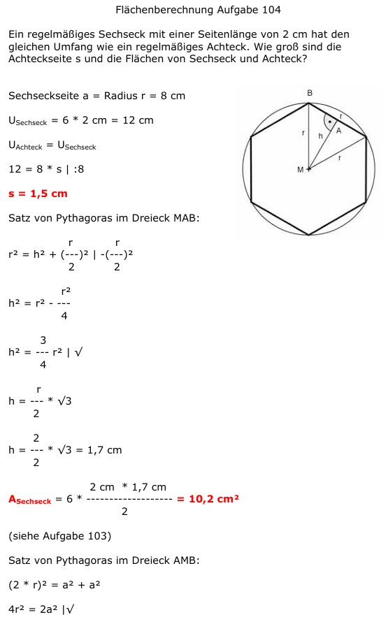
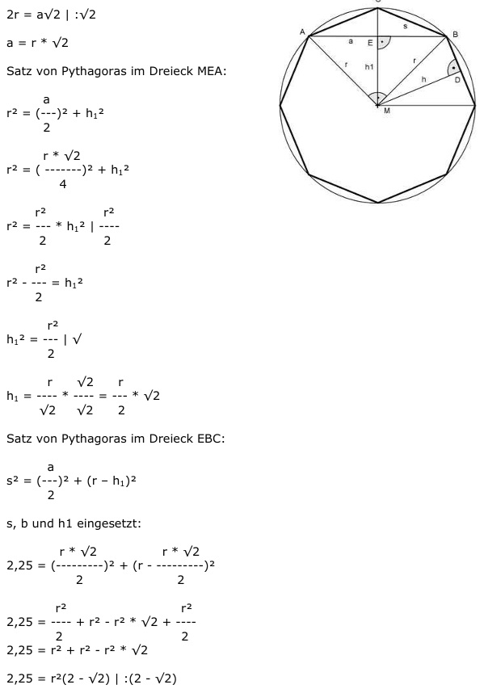
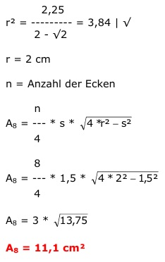

Aufgabe 104 Ein regelmäßiges Sechseck mit einer Seitenlänge von 2 cm hat den gleichen Umfang wie ein regelmäßiges Achteck. Wie groß sind die Achteckseite s und die Flächen von Sechseck und Achteck?  Sechseckseite a = Radius r = 8 cm USechseck = 6 * 2 cm = 12 cm UAchteck = USechseck 12 = 8 * s | :8 s = 1,5 cm Satz von Pythagoras im Dreieck MAB: r r r2 = h2 + (---)2 | -(---)2 2 2 r2 h2 = r2 - ---- 4 3 h2 = --- r2 | √ 4 r h = --- * √3 2 2 h = --- * √3 = 1,7 cm 2 2 cm * 1,7 cm ASechseck = 6 * ---------------- = 10,2 cm2 2  (siehe Aufgabe 103) Satz von Pythagoras im Dreieck AMB: (2 * r)2 = a2 + a2 4r2 = 2a2 |√ 2r = a√2 | :√2 a = r * √2 Satz von Pythagoras im Dreieck MEA: a r2 = (---)2 + h12 2 r * √2 r2 = ( --------)2 + h12 4 r2 r2 r2 = ---- * h12 | - ---- 2 2 r2 r2 - ---- = h12 2 r2 h12 = ---- | √ 2 r √2 r h1 = ---- * ---- = --- * √2 √2 √2 2 Satz von Pythagoras im Dreieck EBC: a s2 = (---)2 + (r – h1)2 2 s, b und h1 eingesetzt: r * √2 r * √2 2,25 = (--------)2 + (r - --------)2 2 2 r2 r2 2,25 = ---- + r2 - r2 * √2 + ---- 2 2 2,25 = r2 + r2 - r2 * √2 2,25 = r2(2 - √2) |:(2 - √2) 2,25 r2 = -------- = 3,84 |√ 2 - √2 r = 2 cm n = Anzahl der Ecken  A8 = 11,1 cm2